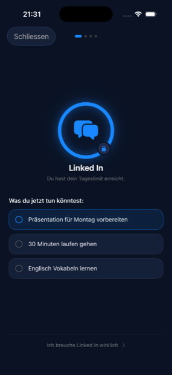

Block distracting apps. Get things done. Ablenkende Apps blocken. Sachen erledigen.
Nothing happens? TikTok's built-in browser is not allowed to open the App Store. Tap ••• at the top right, choose “Open in browser” — or search for OffScroll in the App Store.
Es passiert nichts? Der eingebaute Browser von TikTok darf den App Store nicht öffnen. Tippe oben rechts auf •••, wähle „Im Browser öffnen“ — oder suche im App Store nach OffScroll.

Instead of the app, your three most important tasks. Statt der App stehen deine drei wichtigsten Aufgaben da.